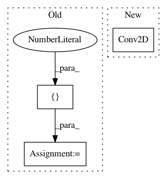

7272af90d4f5916f61f8bc5660e5605e730bbd78,examples/securenn/network_d.py,ModelTrainer,build_training_graph,#ModelTrainer#Any#,97
Before Change
self.KERNEL,
self.IN_CHANNELS,
self.HIDDEN_CHANNELS], 1.)
bconv1 = bias_variable([1, 1, self.HIDDEN_CHANNELS])
wfc1 = weight_variable([self.HIDDEN_FC1, self.HIDDEN_FC2], 1.)
bfc1 = bias_variable([self.HIDDEN_FC2])
wfc2 = weight_variable([self.HIDDEN_FC2, self.OUT_N], 1.)
bfc2 = bias_variable([self.OUT_N])
After Change
// model parameters and initial values
model = keras.Sequential()
model.add(keras.layers.Conv2D(self.HIDDEN_CHANNELS,
(self.KERNEL, self.KERNEL),
batch_input_shape=(self.BATCH_SIZE,
self.IN_DIM,
self.IN_DIM,
self.IN_CHANNELS)))
model.add(keras.layers.Activation("relu"))
model.add(keras.layers.AveragePooling2D())
model.add(keras.layers.Flatten())
In pattern: SUPERPATTERN
Frequency: 3
Non-data size: 3
Instances
Project Name: mortendahl/tf-encrypted
Commit Name: 7272af90d4f5916f61f8bc5660e5605e730bbd78
Time: 2019-07-16
Author: suriyaku@gmail.com
File Name: examples/securenn/network_d.py
Class Name: ModelTrainer
Method Name: build_training_graph
Project Name: tryolabs/luminoth
Commit Name: 8f39923b36c0ad23e63b2c7e4effdfce20bdae34
Time: 2018-03-20
Author: joaquin.alori@gmail.com
File Name: luminoth/models/ssd/ssd.py
Class Name: SSD
Method Name: _build
Project Name: Hironsan/anago
Commit Name: 1b032e57960cb79f5d22e8fcf6295e307cd80198
Time: 2017-07-25
Author: light.tree.1.13@gmail.com
File Name: anago/models/bilstm_cnn.py
Class Name: BiLSTMCNN
Method Name: _build_model